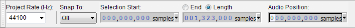

Selection Toolbar
From Audacity Manual
If you change the Snap To option or selection format, all subsequent project windows you open will respect that change.
- Click on the toolbar image below to see this toolbar displayed in context of the default lower tooldock layout.
Selection Toolbar (above) is normally at the bottom of the Audacity window, but like any of the Toolbars, it can be moved as desired by dragging the serrated edge on its left side.
Project Rate (Hz)
The sample rate for the project, by default this is set to 44100 Hz. To change the default rate that is used each time Audacity is launched (or each time a new, empty project window is opened), use Quality Preferences.Changing the project rate in Selection Toolbar immediately changes the sample rate at which new tracks will be recorded or generated in the current project, and at which existing tracks will be played, rendered or exported. If the rate you require is not in the dropdown list, you may type the rate you want directly over the currently selected rate.
Snap To
Various types of file frame can be snapped to, including NTSC and PAL. Snapping to film frames can be useful to maintain video and audio synchronization when editing audio from video files.
- Select Nearest
 from the Snap To dropdown menu to force-snap the cursor or selection edges to the closest position of the current selection format.
from the Snap To dropdown menu to force-snap the cursor or selection edges to the closest position of the current selection format.
- A mouse click will move the cursor unless the click is less than half way to the next nearest snap position.
- Any selection drag moves the selection once you drag the mouse pointer more than half way to the next snap position in the direction of drag.
- Select Prior from the same menu to force-snap the cursor or selection edges to the immediately preceding position of the current selection format.
- If a mouse click moves the cursor, it will always move it backwards relative to the click point.
- A leftwards selection drag immediately moves the selection to the next snap position in the direction of drag. A rightwards drag does not move the selection until the mouse pointer goes beyond the next snap position.
The format can be various time units, samples, audio CD frames or film frames. The default format is hours, minutes, seconds and milliseconds (seconds accurate to three decimal places, as in the above image).
| Even if Snap To is enabled, a track or clip can still be time-shifted to any position and the and commands will still align to positions outside snap positions for the current format. |
Nearest
With Snap To set to "Nearest" and the format set to hours, minutes, seconds and milliseconds, clicking in-between 6.500 seconds and 6.501 seconds as displayed on the Timeline snaps the cursor to the nearest millisecond unit, unless the cursor is already exactly at the nearest millisecond unit relative to the click point.
Now suppose we want to snap to whole seconds. To do this, change the format to one where the smallest unit is seconds, for example, hours, minutes and seconds (hh:mm:ss).
- Assuming the cursor is currently at other than exactly 2.0 whole seconds, clicking at 2.4 seconds will now snap the cursor to 2.0 seconds, while clicking at 2.8 seconds will snap the cursor to 3.0 seconds.
- Dragging a selection always snaps both selection edges to the nearest whole second. For example, when dragging rightwards on the right edge of a selection from 2.3 seconds to 2.6 seconds, the left edge of the selection will jump back at once to 2.0 seconds and the right edge of the selection will jump forwards at once to 3.0 seconds.
- If you continue to drag the mouse pointer, the right edge of the selection will not extend at once, but will snap to 4.0 seconds once the mouse pointer is dragged beyond 3.5 seconds. Similarly, if you then drag leftwards on the left edge of the selection it will extend to start from 1.0 seconds when the pointer is dragged before 1.5 seconds.
Prior
With Snap To set to "Prior" and the format set to hours, minutes, seconds and milliseconds, clicking anywhere in-between 6.500 seconds and 6.501 seconds always snaps the cursor to the immediately preceding unit, in this case 6.500 seconds.
Now let's set the format to one where the smallest unit is seconds, for example, hours, minutes and seconds.
- Clicking at either 2.4 seconds or 2.8 seconds will both snap the cursor to 2.0 seconds
- Dragging a short way on either edge of a selection from 2.3 seconds to 2.6 seconds will remove the selection and set the cursor at 2.0 seconds because the snap is to the previous whole second unit and there can not be a selection shorter than a whole second.
- Dragging rightwards on the right edge of a selection from 2.0 seconds to 4.0 seconds will not extend the selection until the mouse pointer reaches exactly 5.0 seconds. Dragging rightwards on the left edge will not contract the selection until the pointer reaches exactly 3.0 seconds.
- Dragging leftwards on the left edge of a selection from 2.0 seconds to 4.0 seconds extends the selection immediately to start from 1.0 seconds. Dragging leftwards on the right edge contracts the selection immediately to end at 3.0 seconds.
- When either "Nearest" or "Prior" Snap To is enabled you can always move the cursor to the preceding or following Snap To position by using keyboard LEFT arrow or RIGHT arrow respectively.
- Similarly you can always expand a selection edge to the nearest Snap To position by holding SHIFT and pressing LEFT arrow to move the left edge or RIGHT arrow to move the right edge.
- Contract a selection edge to the nearest Snap To position by holding CTRL and SHIFT then pressing LEFT arrow to contract from the right edge or RIGHT arrow to contract from the left edge.
Selection and Audio Position Boxes
- Selection Start: If there is no selection, this shows the cursor position.
- (Selection) End/Length: Click the "End" radio button to show the end point of the selection. If there is no selection, the value is the same as the Selection Start. Clicking the "Length" button shows the length of the selection instead (the value shows as zero if there is no selection).
- Audio Position: Displays the current real time position of playback or recording. Editing the values has no effect.
Editing the Selection Toolbar digits
You can edit the individual digits representing time or other formats in the "Selection Start" and "End/Length" boxes so as to change the cursor position or selection region on the waveform. Using a mouse, click on a digit in one of the boxes then use the mouse wheel or up and down arrow on the keyboard to increment the value, or type the required value. Use left and right arrow to navigate quickly to adjoining digits, and TAB or SHIFT + TAB to navigate to adjoining boxes.
Selection Toolbar is also fully accessible using only the keyboard. See Audacity Selection for how to use Selection Toolbar with the keyboard.
|
Selections made by modifying the Selection Toolbar time digits with either keyboard or mouse will always snap to the current selection format, even if the Snap To checkbox is unchecked. Note particularly that changing theLength of a selection by modifying the Selection Toolbar time digits may alter the start of the selection, if the start of the selection is not currently at an exact multiple of the selection format. That is, by editing the Length, the entire selection, including the start, will snap to the current selection format. |
Selection Formats
To access the context menu listing the selection formats, click the triangle to right of any box. You can also select in or right-click over any digit in a box (or use a keyboard equivalent). The following table lists the 16 available formats.
Selection Format Example Notes seconds 005,408 seconds hh:mm:ss 01 h 30 m 08 s Hours, minutes, seconds dd:hh:mm:ss 00 days 01 h 30 m 08 s Days, hours, minutes, seconds hh:mm:ss + hundredths 01 h 30 m 08.51 s hh:mm:ss + milliseconds 01 h 30 m 08.512 s Default hh:mm:ss + samples 01 h 30 m 08 s + 22500 samples samples 238,514,850 samples hh:mm:ss + film frames (24 fps) 01 h 30 m 08 s + 12 frames film frames (24 fps) 129,804 frames hh:mm:ss + NTSC drop frames 01 h 30 m 08 s + 14 frames American video format hh:mm:ss + NTSC non-drop frames 01 h 30 m 03 s + 02 frames NTSC frames 162,092 frames hh:mm:ss + PAL frames (25 fps) 01 h 30 m 08 s + 12 frames European video format PAL frames (25 fps) 135,212 frames hh:mm:ss + CDDA frames (75 fps) 01 h 30 m 08 s + 37 frames CDDA frames (75 fps) 405,637 frames Audio CD frames
- 